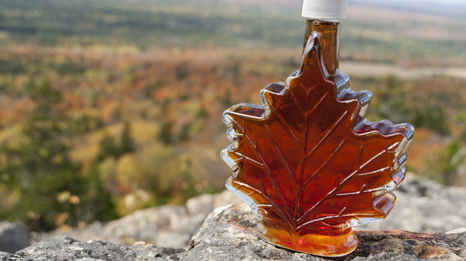

About Canada
Canada is the second-largest country in the world, known for its stunning natural landscapes, multicultural cities, and a deep appreciation for hockey and maple syrup. Its diverse geography ranges from the majestic Rocky Mountains to the pristine Atlantic and Pacific coastlines, and the vast, untouched wilderness of the north. Its unique blend of British and French colonial history, along with the rich heritage of its Indigenous peoples, has shaped a distinct national identity. Politically, Canada is a parliamentary democracy and a constitutional monarchy. The country is celebrated for its progressive values, including a commitment to multiculturalism and a strong social safety net, which are cornerstones of its national character.

Ontario
Home to Canada's capital, Ottawa, and its largest city, Toronto. A hub for finance, culture, and government.
British Columbia
British Columbia is a province of rugged mountains and lush rainforests, all meeting the Pacific coastline. Its main city, Vancouver, is a vibrant urban hub surrounded by stunning natural beauty.
Alberta
Alberta is the iconic home of the Canadian Rocky Mountains and its world-renowned national parks, including Banff and Jasper. It is a land of dramatic landscapes, from majestic peaks to the vast plains of the prairies.

Banff National park
Located in the Rocky Mountains, it's Canada's first national park and a UNESCO World Heritage Site, with some of the best breathtaking scenery.

CN Tower
A symbol of Toronto, this iconic structure offers a stunning panoramic view of the city and Lake Ontario.

Parliment Hill
The home of Canada's federal government, located in Ottawa, Ontario, with stunning Gothic Revival architecture.
Poutine
A delicious dish of French fries topped with cheese curds and a savory gravy. A true Canadian classic.

Maple Syrup
The iconic sweet treat harvested from maple trees. Perfect on pancakes, waffles, or anything else.
Butter Tarts
A quintessential Canadian dessert, these small pastries have a flaky crust and a rich, sweet filling.